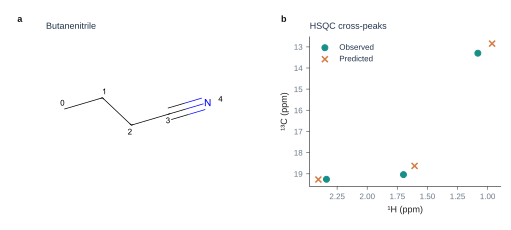

HSQC cross-peak prediction
Predict C–H cross-peaks from a known structure and solvent.
Load the released TransPeakNet weights and encode the original SMILES with explicit hydrogens. The benchmark pairs each predicted carbon and its two ordered proton outputs with the expert row for the same carbon index.
This tutorial loads the saved predictions, explains the input/output fields and evaluates the results. Use the final command to run the model on a new dataset.
import json, sys, io
from pathlib import Path
from IPython.display import display, Markdown, SVG
root = next((p for p in [Path.cwd(), *Path.cwd().parents] if (p / 'openmolspec_bench').is_dir()), None)
if root is None:
raise RuntimeError('Run from the cloned release repository; see Quick Start')
sys.path.insert(0, str(root / 'scripts'))
from documentation_evidence import load_evidence, compact, recompute, render
from documentation_content import results_table
evidence = load_evidence('nmr.hsqc.transpeaknet')
print('Task:', evidence['task'])
print('Examples:', len(evidence['examples']))
Task: nmr.hsqc.transpeaknet
Examples: 1
Inputs and outputs
Field |
Meaning |
|---|---|
|
Original atom order of the known structure. |
|
One of the nine author solvent classes. |
Field |
Meaning |
|---|---|
|
Zero-based protonated carbon indices. |
|
Per-carbon shifts and two proton head outputs in ppm. |
Inspect the example records below. Long arrays show their length and first values; the downloadable JSON contains the complete arrays.
for example in evidence['examples'][:3]:
print(json.dumps(compact(example), indent=2, ensure_ascii=False))
{
"sample_id": "32869.csv",
"input": {
"smiles": "CCCC#N",
"solvent": "CDCl3"
},
"output": {
"peaks_c_h_ppm": [
[
12.845844268798828,
0.962708592414856
],
[
18.62872314453125,
1.6068708896636963
],
[
19.271541595458984,
2.4061617851257324
]
],
"carbon_atom_index": [
0,
1,
2
]
},
"reference": {
"peaks_c_h_ppm": [
[
13.3,
1.081
],
[
19.04,
1.699
],
[
19.26,
2.339
]
]
}
}
Evaluate the predictions
The full ZIP gives one vote to each of 479 spectra. The author notebook gives one vote to each of 511 metadata rows covering 472 spectra. The full-ZIP run uses the unknown class for 38 conflicting and seven missing solvent labels.
The table gives the dataset and metric for each run. The following calculation recomputes summary values from the plotted predictions.
display(Markdown(results_table(evidence, True)))
print(json.dumps(recompute(evidence), indent=2, ensure_ascii=False))
| Dataset / scope | Model / variant | Metric | Value | | — | — | — | —: | | 479 expert spectra | recorded model | carbon_mae_ppm | 2.02753 | | 479 expert spectra | recorded model | proton_mae_ppm | 0.165891 | | Author notebook (511 solvent rows) | recorded model | carbon_mae_ppm | 2.02487 | | Author notebook (511 solvent rows) | recorded model | proton_mae_ppm | 0.165062 |
{
"scope": "Saved model outputs are shown directly; aggregate metrics are in the run table.",
"recorded_runs": 2,
"real_examples": 1
}
Visualize the result
Observed and predicted HSQC cross-peaks for butanenitrile in CDCl₃.
Compare the prediction with the reference and inspect the returned structures or peak positions. The plot is generated directly from the records loaded above.
import matplotlib.pyplot as plt
for example_index in range(1):
figure = render('nmr.hsqc.transpeaknet', evidence, example_index=example_index)
image = io.StringIO()
figure.savefig(image, format='svg', metadata={'Date': None})
display(SVG(image.getvalue()))
plt.close(figure)

Run the model
Configure the runtime and weights following the task guide. Select this task in the benchmark runner to evaluate your dataset.
python -m openmolspec_bench run --workspace /path/to/OpenMolSpec \
--tasks nmr.hsqc.transpeaknet --transpeaknet-source /path/to/2dNMR --limit 8 --output results/nmr-hsqc-transpeaknet.json
References
Li, Y., Xu, H., et al. TransPeakNet for solvent-aware 2D NMR prediction via multi-task pre-training and unsupervised learning. Communications Chemistry (2025). Source